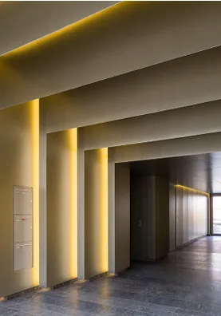
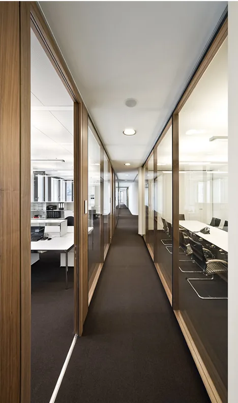
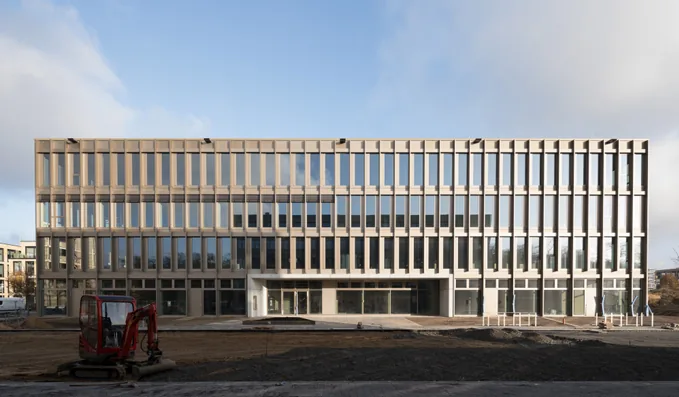
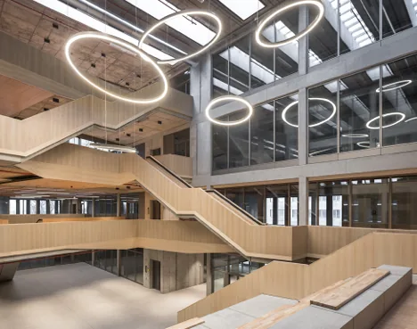
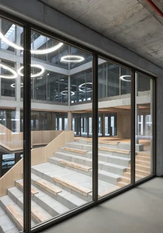
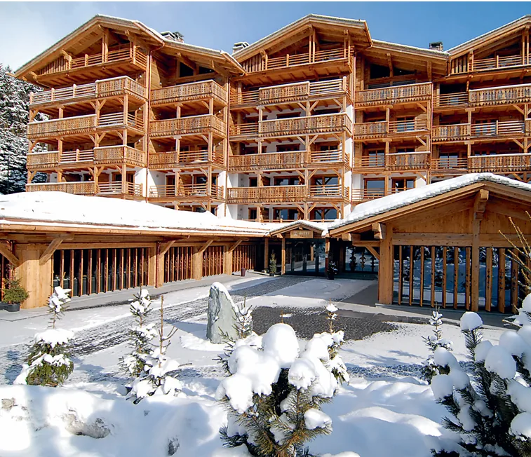
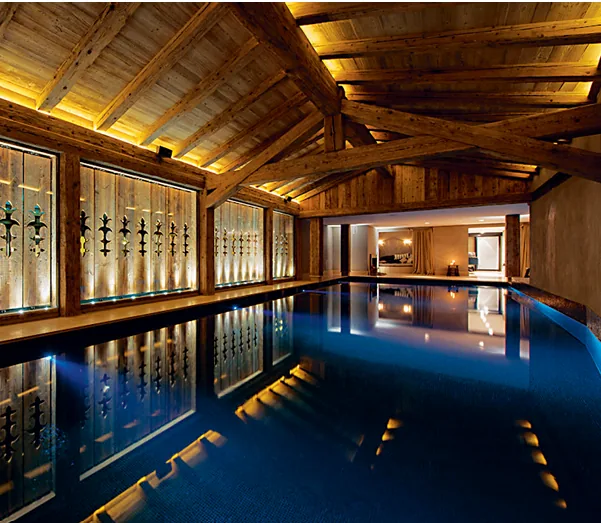
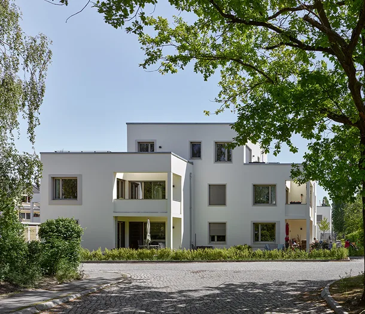
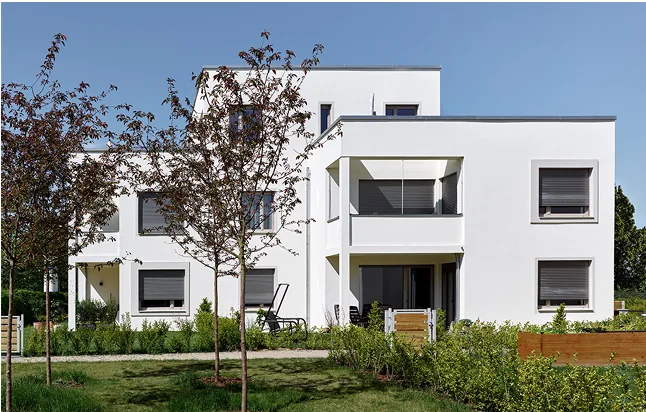

Marienfelde



Projekte
Sieben Projekte aus unserer bisherigen Tätigkeit: Wohnungsbau, Sanierung, Gewerbe und Innenausbau, teils in leitender Rolle in vorherigen Büros verantwortet.
















Weitere Referenzen und Leistungsnachweise senden wir Ihnen auf Anfrage zu.
Erzählen Sie uns von Ihrem Vorhaben in Berlin. Wir nennen Ihnen passende Referenzen und melden uns innerhalb weniger Tage.